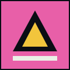

Palco Quadra
19h
Abertura com os coletivos da região.
Coletivo Zona Sul
Doze faixas gravadas num estúdio montado na laje. Grave estourado de propósito.

MC Trinta e Dois
Gravado entre um turno e outro.
 AO VIVO
AO VIVO
Banda Pátio
Registro de um show na quadra, com o público cantando por cima de metade das faixas. Vale pelo coro.
DJ Aline
Mixtape de madrugada.
Meninas do Bloco
Quatro vozes, um teclado emprestado e uma caixa de som de feira.
Serginho do Prato
Samba de mesa gravado no celular, sem nenhum conserto depois.
19h
Abertura com os coletivos da região.
21h
Batalha de rima, chave aberta. Inscrição na hora.
23h
Encerramento com a banda da casa e convidados.